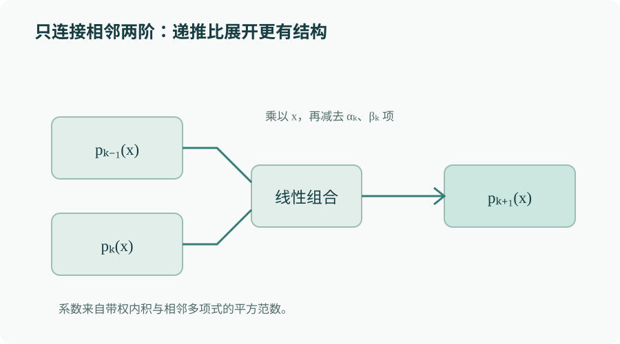
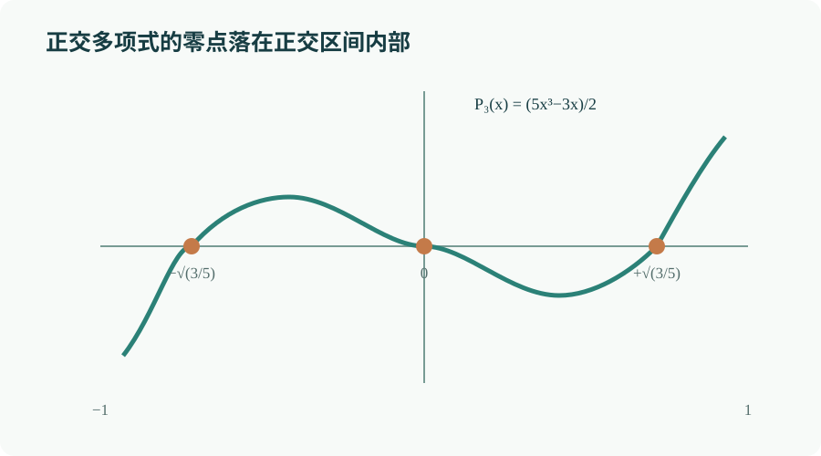
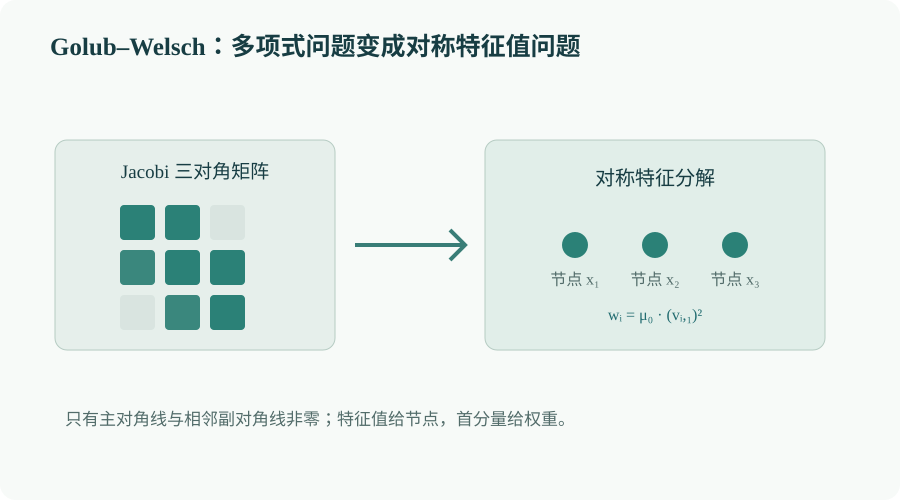

CHAPTER 14 · NUMERICAL ANALYSIS
正交多项式：从三项递推到 Jacobi 矩阵
正交多项式为什么能让高次计算更稳定？从带权内积、三项递推、零点性质到 Jacobi 三对角矩阵，揭示正交多项式与 Gauss 求积节点的统一结构。
01 · 为什么高次幂基底会让本来简单的积分变难？
用 1,x,x²,…,xⁿ 表示一个函数，写法直观；但当次数升高时，基函数在区间上可能高度相关，构造出来的 Gram 矩阵会变得病态。此时即使数学上系数唯一，浮点求解也可能对很小的数据扰动异常敏感。
正交多项式的目标不是让公式看起来漂亮，而是让不同阶的基函数在指定内积下互不耦合。这样，投影系数、求积矩和节点构造都能利用对角结构或三对角结构完成。正交性总是相对于指定区间和权函数而言，不能脱离内积讨论。

02 · 正交的定义：区间、权函数和内积缺一不可
在区间 (a,b) 上给定非负权函数 w(x)，并要求相关积分存在。由此定义带权内积。两个不同次数的多项式内积为零时，称它们正交。
例如 Legendre 多项式在 [−1,1] 上以 w=1 为权；第一类 Chebyshev 多项式在同一区间以 1/√(1−x²) 为权；Laguerre 多项式在 [0,∞) 上使用 e⁻ˣ；Hermite 多项式在整条实轴上使用 e⁻ˣ²。NIST DLMF 的经典正交多项式表明确列出了各族区间、权函数和标准化约定。

03 · 三项递推：从正交性推导可计算的局部结构
设 pₖ 是首项系数为 1 的 monic 正交多项式，p₀=1、p₋₁=0。将 x pₖ 展开到正交基底中，由于它与低于 k−1 阶的多项式内积为零，展开中只剩下相邻三项。这就得到三项递推。令 hₖ=⟨pₖ,pₖ⟩w，则 αₖ=⟨xpₖ,pₖ⟩w/hₖ，βₖ=hₖ/hₖ₋₁>0（k≥1）。
如果改用单位范数的正交归一基底，递推中的相邻系数会变成 √βₖ；不要在同一个公式里把 monic 与 orthonormal 两套系数混用。Legendre 多项式是一个具体例子：P₀=1、P₁=x，之后满足标准三项递推。用它计算高次多项式值，比直接套 Rodrigues 公式展开幂次更适合常规数值求值。
递推是结构化计算的入口，但不是“任何次数、任何区间、任何浮点精度下都绝对稳定”的承诺。极高次数、根附近的相对误差、权函数尺度和归一化方式仍需要单独考虑。
04 · Jacobi 矩阵：Gauss 节点变成对称三对角矩阵的特征值
把正交归一递推写成 xqₖ=√βₖ₊₁ qₖ₊₁+αₖqₖ+√βₖ qₖ₋₁，就可以把系数排成一个实对称三对角矩阵 Jₙ。该矩阵的特征值恰好是 n 点 Gauss 求积节点；对应归一特征向量的第一个分量平方，再乘以总质量 μ₀=∫w，就得到权重。
这就是 Golub–Welsch 算法的核心：把“寻找高次正交多项式的根”转成“求解一个对称三对角矩阵的特征值和特征向量”。NIST DLMF 将递推、Jacobi 矩阵谱和 Gauss 权重放在同一节中，说明这不是松散的类比，而是精确的数学等价。

05 · Gram–Schmidt：理论上正交，浮点实现却可能丢失正交性
给定一组线性独立函数，可以用 Gram–Schmidt 过程逐个减去已有方向的投影，再归一化，构造正交归一基底。若原始基底是幂函数，随着次数升高，投影系数和剩余向量可能出现严重消去，计算出来的向量不再严格正交。
经典 Gram–Schmidt 在浮点数中可能丢失正交性；Modified Gram–Schmidt 通常更稳健，但在极端病态输入下也可能需要重新正交化。构造经典正交多项式时，已知三项递推和权函数通常比先建立高阶矩矩阵、再做一次高维 Gram–Schmidt 更合适。
还要区分“连续内积正交”与“有限采样点上数值向量正交”。若使用求积规则近似内积，求积阶数不足时，离散正交性不等于连续正交性。
06 · 实验：由 Legendre 递推与 Jacobi 三对角矩阵核对三点 Gauss 规则
import math
def legendre_values(x, n):
p = [0.0] * (n + 1)
p[0] = 1.0
if n >= 1:
p[1] = x
for k in range(1, n):
p[k+1] = ((2*k+1)*x*p[k] - k*p[k-1])/(k+1)
return p
r = math.sqrt(3.0/5.0)
nodes = [-r, 0.0, r]
weights = [5.0/9.0, 8.0/9.0, 5.0/9.0]
for x in nodes:
assert abs(legendre_values(x, 3)[3]) < 1e-12
# 3x3 Legendre Jacobi matrix off-diagonals:
# a1=1/sqrt(3), a2=2/sqrt(15)
a1, a2 = 1/math.sqrt(3), 2/math.sqrt(15)
assert abs(math.sqrt(a1*a1+a2*a2)-r) < 1e-12
assert abs(sum(weights)-2.0) < 1e-12
for degree in range(6):
f = lambda x, d=degree: x**d
q = sum(w*f(x) for x,w in zip(nodes,weights))
exact = 0.0 if degree % 2 else 2.0/(degree+1)
assert abs(q-exact) < 1e-12
print("OK: P3 roots, Jacobi eigenvalues, positive weights, degree-5 exactness")三点 Legendre 规则的节点是 −√(3/5),0,+√(3/5)，权重为 5/9,8/9,5/9。实验同时核对了多项式递推、节点根、权重和与五次代数精度，避免只把一组查表数字写进正文而不解释它们的来源。
原始资料与延伸阅读
数学结构与算法细节以 NIST DLMF、原始论文和 LAPACK 文档交叉核对；所有图解和实验均为独立构造。
- NIST DLMF §18.2 · General Orthogonal Polynomials：正交多项式定义、三项递推和零点性质。
- NIST DLMF §18.3 · Classical Orthogonal Polynomials：Legendre、Chebyshev、Laguerre 与 Hermite 多项式的区间和权函数。
- NIST DLMF §3.5(vi) · Jacobi Matrix Characterization：三项递推、Jacobi 三对角矩阵特征值与求积权重。
- Golub & Welsch (1969) · Calculation of Gauss Quadrature Rules：由正交多项式递推构造 Jacobi 矩阵，以特征值和特征向量首分量求节点与权重。